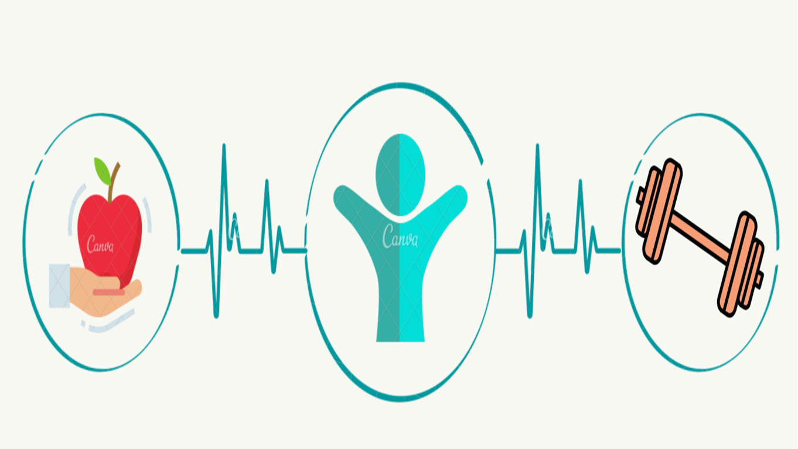

Physical Health
Physical health by definition is the ability to perform daily tasks and live comfortably in one's body. It is correlated with mental health because good physical health leaves a better personal feeling in the person.
HOW TO TAKE CARE OF YOUR PHYSICAL HEALTH
Healthy Diet
Healthy Diet
A healthy diet gives one's body the nutrients it needs for it to function correctly. Combined with proper exercise, diet can help one to reach and maintain a healthy weight and reduce the chances of getting sick.
 The Eatwell Guide shows that to have a healthy diet, people should try to:
The Eatwell Guide shows that to have a healthy diet, people should try to:
- - eat at least 5 portions of fruirs and vegetables each day
- - base meals on higher fiber starchy foods like potatoes, bread, rice or pasta
- - drink some dairy or dairy alternatives
- - eat some beans, pulses, fish, eggs, meat and other protein
- - choose unsaturated oils and spreads, and eat them in small amounts
- - drink plenty of fluids
Exercise
Exercise helps people lose weight and lower the risk of acquiring diseases. It also increases energy levels and improve muscle strength.
The Department of Health and Human Services recommends these exercise guidelines:
- - Aerobic Activity for at least 150 minutes a week
- - Strength Training for 12-15 repetitions twice a week